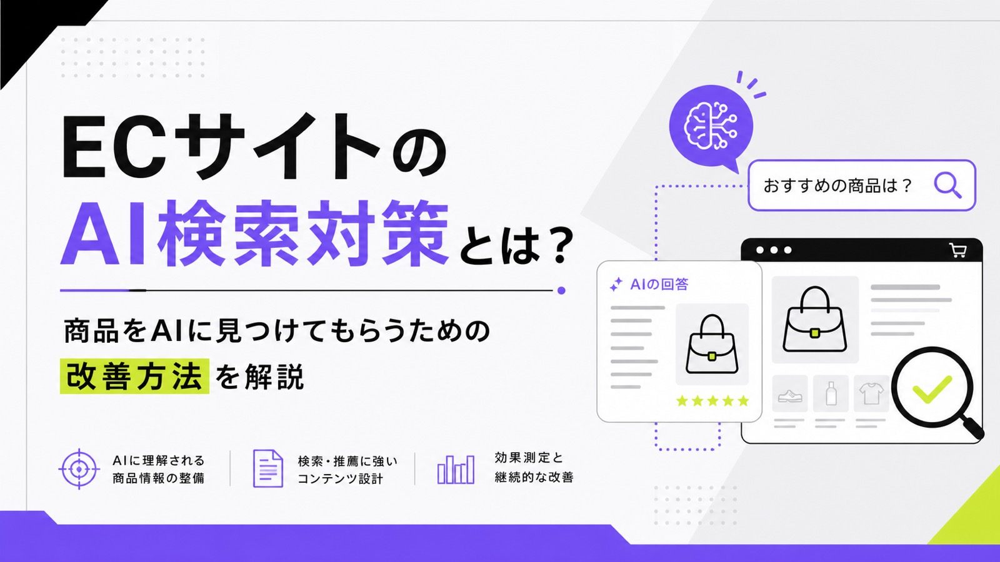
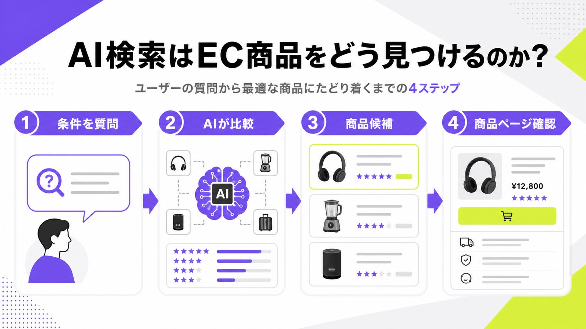
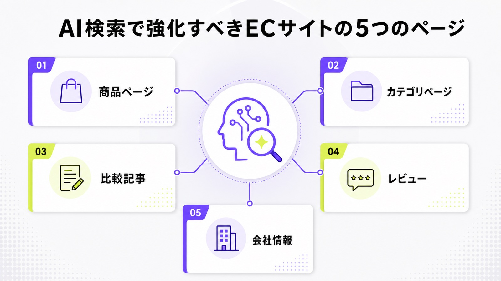
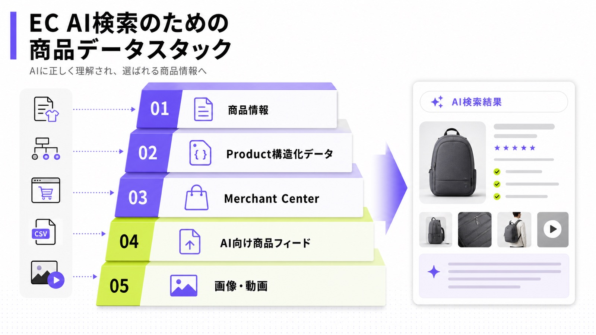
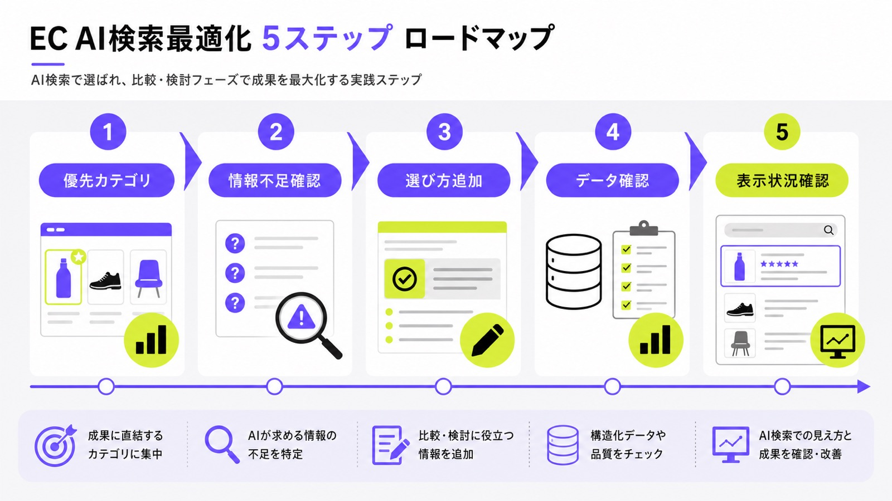

ECサイトのAI検索対策とは？商品をAIに見つけてもらうための改善方法を解説

ECサイトの集客では、従来のSEOだけでなく、AI検索に商品情報を正しく理解してもらう対策が重要になっています。
ユーザーはGoogleで商品を探すだけでなく、ChatGPTやGoogleのAI機能に「一人暮らし向けの冷凍庫を教えて」「敏感肌でも使いやすい化粧水を比較したい」のように相談するようになっています。つまり、AI検索対策では、検索結果で上位に出ることに加えて、AIが商品を比較・推薦しやすい情報を持つことが大切です。
この記事では、ECサイトに必要なAI検索対策の考え方、優先すべきページ、具体的な改善方法を解説します。AI検索全体の考え方を先に押さえたい場合は、LLMO対策の基本記事もあわせて確認してください。
目次

ECサイトのAI検索対策とは
ECサイトのAI検索対策とは、ChatGPTやGoogleのAI機能などが、自社の商品・カテゴリ・ブランド情報を正しく理解し、ユーザーへの回答に使いやすい状態を作る取り組みです。
単に商品名を増やしたり、AI向けのキーワードを詰め込んだりする施策ではありません。商品ページ、カテゴリページ、比較記事、レビュー、構造化データ、商品フィードなどを整え、AIが「どの商品が、誰に、なぜ向いているのか」を判断しやすくすることが重要です。

AI検索対策は、商品情報をAIに理解してもらうための施策
AI検索では、ユーザーの質問に対して、AIが複数の情報をもとに回答を作ります。ECサイトの場合、商品名、価格、在庫、レビュー、スペック、配送情報、返品条件などが、購入判断に関わる重要な情報になります。
たとえば「通勤に使いやすい軽いバッグを教えて」と質問されたとき、AIは単に「バッグ」というカテゴリだけを見るわけではありません。重さ、サイズ、素材、収納力、価格帯、レビュー、利用シーンなどを組み合わせて、ユーザーの条件に合う商品を判断します。
そのため、ECサイト側は商品ページに「軽量」「通勤向け」といった単語を入れるだけでは足りません。なぜ通勤に向いているのか、どのような荷物が入るのか、どのような人には合わないのかまで書くことで、AIにもユーザーにも判断材料を渡せます。
AI検索対策はSEOの延長線上にある
ECサイトのAI検索対策は、SEOとは別の特殊な施策ではありません。AI検索で商品を見つけてもらうには、まず通常の検索エンジンに正しく理解されるサイトである必要があります。商品ページがクロールされ、インデックスされ、ページ内の情報が読み取れる状態になっていなければ、AI検索以前の段階で機会損失が起きます。
たとえば、商品ページがnoindexになっている、重要な商品情報が画像内にしかない、JavaScriptの表示に依存していて価格や在庫が読み取りにくい、といった状態では、AIが商品を正しく理解しにくくなります。AI検索対策を始める前に、基本的なSEOと技術的な状態を確認することが大切です。
「AI OverviewsやAI Modeに表示されるための追加要件や、特別な最適化はありません。」
出典：Google Search Central｜AI features and your website
※原文を日本語訳。AI検索向けの特別な裏技ではなく、クロール、インデックス、ページ品質などの基本を整える重要性を示す引用です。
一方で、従来のSEOと少し違うのは、評価対象が「キーワードに合うページ」だけではなく、「質問に対して答えやすい情報」になっている点です。ECサイトなら、商品そのものの説明だけでなく、選び方、比較軸、対象ユーザー、注意点、口コミ、配送条件まで含めて整える必要があります。
ECサイトにAI検索対策が必要な理由
ECサイトにAI検索対策が必要な理由は、ユーザーの商品探しが変わっているためです。
これまでは「商品カテゴリ名で検索する」「比較記事を読む」「ECモール内で探す」という流れが中心でした。しかしAI検索が広がると、ユーザーはより具体的な条件をAIに伝え、その条件に合う商品候補を出してもらうようになります。
ユーザーの商品探しが会話型に変わっている
従来の検索では、「冷凍庫 一人暮らし」「通勤 バッグ レディース」「敏感肌 化粧水」のような短いキーワードで商品を探すケースが一般的でした。しかしAI検索では、「一人暮らしで置き場所が狭くても使いやすい冷凍庫を教えて」「30代女性が通勤で使いやすい軽いバッグを比較して」のように、条件を細かく伝える検索行動が増えます。
この変化は、ECサイトの商品ページにも影響します。商品名、価格、スペックだけを並べたページでは、AIが「どの条件に合う商品なのか」を判断しにくくなります。商品がどのような悩みを解決するのか、どのような利用シーンに向いているのか、どのような人には向かないのかまで書く必要があります。
とくにECサイトでは、ユーザーが商品を買う前に不安を抱えています。サイズは合うのか、安っぽく見えないか、返品できるのか、レビューは信頼できるのか。こうした購入前の疑問に答える情報をページ内に持たせることが、AI検索対策にもCVR改善にもつながります。
AI回答内で候補に入らないと、比較前に外れる
AI検索では、ユーザーが複数のECサイトを自分で見比べる前に、AIが候補を絞り込むことがあります。この段階で自社商品が出てこなければ、商品ページを見てもらう前に比較対象から外れてしまいます。
従来のSEOでは、検索結果で上位表示されていれば、ユーザーがクリックして商品ページを見る可能性がありました。しかしAI検索では、ユーザーがAIの回答だけで候補を絞るケースがあります。つまり、「検索結果に出る」だけでなく、「AIの回答内で候補として扱われる」ことも重要になります。
そのためには、AIが商品を推薦する理由を作らなければいけません。「価格が安い」「レビューが多い」「軽量」「初心者向け」「返品しやすい」など、判断しやすい情報がページ上に必要です。AI検索対策とは、AIに売り込み文句を読ませることではなく、比較に使える根拠をページ内に増やすことです。
広告やモール依存から抜け出す導線になる
ECサイトは、広告費やモール手数料の影響を受けやすいビジネスです。広告で集客しても、競合が増えればクリック単価は上がります。ECモールに依存すると、価格競争や手数料の負担も避けにくくなります。
AI検索対策は、すぐに広告の代わりになる施策ではありません。しかし、商品ページやカテゴリページを改善し、AIが参照しやすい情報を蓄積できれば、自然検索、指名検索、比較検討段階での露出を増やせます。広告で短期の売上を作りながら、AI検索で中長期の発見導線を育てる考え方が重要です。
とくに自社ECでは、商品ページやカテゴリページが資産になります。モールの商品ページだけを整えても、最終的なデータや顧客接点はモール側に残ります。自社EC上に、商品情報、比較情報、レビュー、ブランド情報を蓄積することで、AI検索時代にも見つけられる土台を作れます。
ECサイトのAI検索対策で重要なページ
ECサイトのAI検索対策では、商品ページだけを改善しても不十分です。
AIは商品単体の情報だけでなく、カテゴリ全体の意味、比較軸、レビュー、ブランドの信頼性なども見ます。そのため、商品ページ、カテゴリページ、比較記事、レビュー、会社情報をセットで整える必要があります。

商品ページ
商品ページは、ECサイトのAI検索対策で最も重要なページです。商品名、価格、在庫、サイズ、カラー、素材、型番、ブランド名、配送情報、返品条件、レビューなど、購入判断に必要な情報を正確に掲載します。
ただし、商品ページで大切なのはデータだけではありません。「この商品は誰に向いているのか」「どんな悩みを解決するのか」「他の商品と何が違うのか」を本文で説明することも重要です。たとえばアパレル商品なら、サイズ感、着用シーン、季節、素材の特徴、透け感、洗濯方法まで書くと、AIにもユーザーにも判断材料が増えます。
商品ページの情報が薄いと、AIはその商品を比較候補に入れにくくなります。商品名や価格だけでは、ユーザーの細かい条件に合うか判断できないためです。ECサイトでは、商品ページを「購入ボタンがあるページ」ではなく、「購入判断に必要な情報を集約するページ」として設計する必要があります。
カテゴリページ
カテゴリページは、AIに商品群の意味を伝えるための重要なページです。多くのECサイトでは、カテゴリページが商品一覧だけになっています。しかし、商品一覧だけでは、そのカテゴリで何を選べばよいのか、どのような違いがあるのか、どのような人に向いているのかが伝わりません。
たとえば「ビジネスバッグ」のカテゴリページなら、通勤向け、出張向け、PC収納重視、軽量タイプ、本革タイプ、防水タイプなど、ユーザーが比較しやすい軸を示す必要があります。カテゴリページが商品一覧だけだと、AIはそのページを「商品が並んでいるページ」としては理解できても、「ビジネスバッグ選びの参考になるページ」としては扱いにくくなります。
カテゴリページには、カテゴリの概要、選び方、価格帯、用途別の違い、人気の条件、関連カテゴリへの内部リンクを入れましょう。商品一覧の上部または下部に説明文を追加するだけでも、ページの役割は大きく変わります。
比較・選び方コンテンツ
AI検索では、比較系の質問が多く使われます。「AとBの違い」「初心者向けのおすすめ」「価格帯別の選び方」「プレゼントに向いている商品」など、ユーザーは購入前に判断材料を求めます。
そのため、ECサイトには商品を並べるだけでなく、比較・選び方コンテンツも必要です。比較記事では、価格、機能、素材、サイズ、対象者、メリット・デメリットを明確にします。自社商品を不自然に推すのではなく、どの条件ならどの商品が合うのかを説明することが大切です。
比較・選び方コンテンツは、AI検索だけでなく通常のSEOにも有効です。商品名を知らないユーザーに接点を作り、カテゴリページや商品ページへ送客できます。ECサイトにとっては、購入前の不安を解消しながら、商品ページに進んでもらうための橋渡しになります。
レビュー・口コミページ
レビューは、AI検索対策でも購入率改善でも重要です。AIは商品を比較するとき、スペックだけでなく、実際の評価や使用感も参考にします。レビューが多く、内容が具体的な商品ほど、ユーザーにもAIにも判断しやすくなります。
重要なのは、レビューをただ集めるだけではありません。「サイズ感」「使い心地」「耐久性」「配送」「デザイン」「悪い点」などに分類すると、ユーザーが知りたい情報にすぐたどり着けます。レビューの内容を商品説明にも反映すれば、ページ全体の説得力が上がります。
たとえば「小さめだった」というレビューが多いなら、サイズ表や着用感の説明を見直すべきです。「組み立てが簡単だった」という声が多いなら、商品説明に組み立て時間や必要工具を追加できます。レビューは単なる評価ではなく、商品ページ改善の材料として使うべきです。
ブランド・会社情報ページ
AI検索対策では、商品だけでなく販売元の信頼性も重要です。とくにECサイトでは、ユーザーが「このショップで買って大丈夫か」「返品できるのか」「サポートはあるのか」を気にします。
運営会社、ブランドの背景、品質管理、返品ポリシー、問い合わせ先、配送体制が曖昧なECサイトは、商品が良くても信頼性を伝えにくくなります。AIにとっても、販売元の情報が不足している商品は扱いにくくなります。
自社商品やD2Cブランドの場合は、ブランドの考え方や開発背景も重要です。なぜその素材を選んだのか、どのような品質基準で作っているのか、どのような人に使ってほしいのかを説明することで、価格やスペックだけでは伝わらない価値を補えます。
ECサイトで優先すべきAI検索対策
ECサイトのAI検索対策は、やるべきことが多く見えます。しかし、最初から全商品を改善する必要はありません。
まずは売上や利益につながるカテゴリを選び、商品ページ、カテゴリページ、構造化データ、商品フィードの順に改善していくのが現実的です。

商品情報を詳しく、正確に書く
最初に取り組むべきなのは、商品情報の充実です。商品名、価格、在庫、ブランド名、型番、JANコード、サイズ、カラー、素材、重量、原産国、配送、返品条件などを正確に記載します。表記ゆれがあると、AIも検索エンジンも商品を正しく認識しにくくなります。
商品説明では、特徴だけでなく、利用シーンや向いている人も書きます。「高品質なバッグです」だけでは、購入判断にはつながりません。「13インチのノートPCが入り、重さは約650g。電車通勤で荷物を軽くしたい人に向いています」のように、具体的な情報に変える必要があります。
また、商品情報はテンプレート化して管理することが大切です。商品ごとに説明の粒度がバラバラだと、サイト全体の品質も安定しません。最低限入れる項目を決め、カテゴリごとに必要な追加情報を設定しておくと、商品登録のたびに情報不足が起きにくくなります。
Product構造化データを設定する
Product構造化データは、商品情報を検索エンジンに伝えるための重要な設定です。価格、在庫、レビュー評価、配送、返品などの商品情報を機械が読み取れる形にすることで、検索エンジンが商品ページの内容を理解しやすくなります。
「Productマークアップをページに追加すると、Google検索のマーチャントリスティング表示の対象になる可能性があります。」
出典：Google Search Central｜Merchant listing structured data
※原文を日本語訳。価格、在庫、配送、返品情報などの商品情報をGoogleに伝える重要性を補強する引用です。
ただし、構造化データだけを入れても十分ではありません。ページ上に表示されている情報と、構造化データの内容を一致させる必要があります。価格、在庫、レビュー評価、配送条件がページ本文とデータでズレていると、検索エンジンにもユーザーにも不信感を与えます。
構造化データは、商品ページごとに手作業で入れるより、ECカートやCMSのテンプレート単位で実装するほうが現実的です。SKU、価格、在庫、レビューなどのデータベースと連動させ、商品情報が更新されたときに構造化データも自動で更新される状態を目指しましょう。
Google Merchant Centerの商品フィードを整える
ECサイトでは、Google Merchant Centerの商品フィードも重要です。Googleは、商品ページの構造化データだけでなく、Merchant Centerにアップロードされた商品データも使って商品情報を理解します。商品タイトル、説明文、価格、在庫、画像、配送情報などを正確に登録することで、Google上で商品が扱われやすくなります。
商品フィードでは、商品ID、タイトル、説明文、商品カテゴリ、GTIN、価格、在庫、画像、ブランド名、配送情報などを正確に登録します。とくに商品タイトルと説明文は重要です。短すぎるタイトルや曖昧な説明文では、商品がどの検索意図に合うのか伝わりにくくなります。
「Google はこのデータを使用して、商品が適切な検索語句と一致するようにしています。」
出典：Google Merchant Center ヘルプ｜商品データ仕様
※Google Merchant Centerの商品データ仕様から引用。商品フィードの正確性が検索語句との一致に関わることを示す内容です。
Merchant Centerの商品データは、定期的な更新も必要です。商品ページでは在庫切れになっているのにフィードでは在庫ありのまま、価格改定後も古い価格が残っている、画像が古いままになっていると、表示不備や機会損失につながります。商品点数が多いECサイトほど、フィード管理の精度が重要になります。
ChatGPT向けの商品データも意識する
AI検索対策では、GoogleだけでなくChatGPTのようなAIサービスも意識する必要があります。ChatGPT上で商品を見つけてもらうには、商品名や説明文だけでなく、価格、在庫、販売者情報などを含む構造化された商品データが重要になります。
「販売者は、構造化された商品フィードを提供することで、ChatGPT内で商品を発見できるようにできます。」
出典：OpenAI Developers｜Products – Agentic Commerce
※原文を日本語訳。ChatGPT上の商品発見では、価格、在庫、販売者情報を含む構造化フィードが重要になります。
すべてのECサイトがすぐに対応できるわけではありませんが、今後は「商品データをAIに渡せる状態にしておくこと」が重要になります。Google向け、モール向け、広告向け、ChatGPT向けで商品情報を別々に管理していると、情報のズレが起きやすくなります。
まずは、自社の商品データベースを整えることが先です。商品名、説明文、価格、在庫、画像、カテゴリ、ブランド、JANコード、配送、返品などを正確に管理できていれば、各プラットフォームへの連携もしやすくなります。AI検索対策は、コンテンツ施策であると同時に、商品データ管理の改善でもあります。
商品画像・動画の品質を高める
ECサイトのAI検索対策では、テキストだけでなく画像や動画も重要です。商品画像は、白背景の商品単体画像だけでなく、使用シーン、サイズ感、着用イメージ、細部の質感がわかる写真を用意しましょう。ユーザーは、画像を見て「自分が使ったときのイメージ」を確認します。
画像や動画は、AIにとっても商品理解の補助情報になります。たとえば家具であれば、部屋に置いたときのサイズ感や質感が伝わる写真が重要です。アパレルなら、着用写真、身長別の見え方、素材のアップ画像が判断材料になります。
Merchant Centerでは2026年の商品データ仕様更新により、商品単位の送料属性や動画リンク属性が追加され、画像の最小解像度に関する警告も2026年4月14日から開始されています。2027年1月31日からは、更新された最小解像度要件の適用が始まる予定です。
参考：Google Merchant Center ヘルプ｜Merchant Center 商品データ仕様の更新のお知らせ（2026年）
ECサイトのAI検索対策で作るべきコンテンツ
AI検索時代のECサイトでは、商品を売るページだけでなく、商品を選ぶためのコンテンツが重要になります。
ユーザーがまだ商品名を知らない段階で接点を作り、比較・検討を通じて商品ページへ誘導する設計が必要です。
商品の選び方記事
選び方記事は、AI検索対策の基本になるコンテンツです。たとえば「初心者向けランニングシューズの選び方」「敏感肌向け化粧水の選び方」「一人暮らし向け冷凍庫の選び方」のような記事です。
選び方記事では、商品を売り込む前に、ユーザーが判断すべき基準を示します。素材、サイズ、価格、用途、注意点などを説明し、その流れで関連商品へつなげます。AIはユーザーの条件に合わせて商品を提案するため、選び方の情報があるサイトは回答材料として使いやすくなります。
大切なのは、一般論だけで終わらせないことです。自社で扱っている商品のカテゴリに合わせて、「この条件ならこのタイプ」「この悩みならこの素材」「初心者はこの価格帯から選ぶと失敗しにくい」のように、購入判断に近い情報まで落とし込みましょう。
用途別おすすめ記事
用途別おすすめ記事は、AI検索で使われやすいコンテンツです。たとえば「在宅ワーク向けのデスクチェア」「一人暮らし向けの小型家電」「出張に使いやすいビジネスバッグ」「プレゼント向けの美容家電」などです。
AI検索では、ユーザーが商品カテゴリではなく用途から質問することがあります。「冷凍庫がほしい」ではなく、「一人暮らしで冷凍食品を多めに保存したい」と聞くようなイメージです。このとき、用途別に商品を整理したページがあると、AIにもユーザーにも使いやすくなります。
用途別おすすめ記事では、商品を並べるだけでなく、なぜその用途に向いているのかを説明しましょう。サイズ、重量、機能、価格、レビュー、注意点を組み合わせて説明すると、単なるランキングではなく、購入判断に役立つ記事になります。
比較記事
比較記事では、複数の商品やブランドを比べます。「A商品とB商品の違い」「価格帯別のおすすめ」「人気モデルの比較」「素材別の違い」など、ユーザーが迷いやすいポイントを記事化します。
比較表を入れる場合は、価格、機能、サイズ、素材、保証、レビュー、向いている人をそろえると、ユーザーが判断しやすくなります。項目がバラバラな比較表は、見た目はそれらしくても実際には役に立ちません。比較軸をそろえることが重要です。
また、比較記事では「どちらが上か」だけでなく、「どの条件ならどちらが向いているか」を書きましょう。価格重視ならA、機能重視ならB、初心者ならCというように条件別に分けると、AIにも回答材料として使われやすくなります。
悩み解決型の記事
悩み解決型の記事は、商品名を知らないユーザーに届きやすいコンテンツです。たとえば「足が疲れにくい靴の選び方」「毛穴が気になる人向けのスキンケア」「部屋干しのニオイを防ぐ洗剤の選び方」「肩こり対策に使えるデスク環境」などです。
ユーザーは最初から商品カテゴリ名で検索するとは限りません。悩みから情報を探し、その解決策として商品にたどり着くことがあります。AI検索でも、「この悩みには何が有効か」という形で質問されるケースが増えます。
悩み解決型の記事を作るときは、すぐに商品紹介へ入らないことが重要です。まず悩みの原因、選び方、避けたいポイントを説明し、そのうえで商品カテゴリや具体的な商品につなげます。売り込みよりも問題解決を優先することで、記事全体の信頼性が上がります。
ブランドや開発背景の記事
ブランドや開発背景の記事も、ECサイトのAI検索対策に役立ちます。どのような考えで商品を作っているのか、なぜその素材を選んだのか、どのような品質管理をしているのかを伝えることで、商品単体では伝わらない信頼性を補えます。
とくにD2Cブランドや自社商品を販売しているECサイトでは、ブランドストーリーや開発背景が差別化になります。大手モールに並ぶ一般商品と違い、自社商品は「なぜこの商品を作ったのか」「誰のための商品なのか」を語れる点が強みです。
AI検索では、商品スペックだけでなく、ブランドの特徴や信頼性も比較材料になります。価格や機能で競合と差がつきにくい商品ほど、ブランド背景、製造体制、サポート体制、ユーザーの声を丁寧に発信することが重要です。
ECサイトのAI検索対策で避けたい失敗
AI検索対策は、単に文章を増やせばよいわけではありません。
商品情報が不正確だったり、ページ内容と構造化データがズレていたり、カテゴリページが薄かったりすると、AIにもユーザーにも選ばれにくくなります。
商品説明が短すぎる
商品説明が短すぎるページは、AI検索に弱くなります。「高品質」「使いやすい」「おしゃれ」だけでは、どのような商品なのか判断できません。ユーザーもAIも、購入判断に必要な情報を得られません。
商品説明には、素材、サイズ、重量、使用シーン、対象者、注意点、他商品との違いを入れましょう。たとえば「軽いバッグ」と書くだけでなく、「約650gで、13インチのノートPCを入れても肩に負担がかかりにくい設計です」のように具体化すると、判断材料になります。
ただし、長ければよいわけではありません。重要なのは、購入前の不安に答えることです。ユーザーが知りたい情報を先回りして書くことで、AIにも人間にも使いやすい商品ページになります。
カテゴリページが商品一覧だけになっている
カテゴリページが商品一覧だけだと、そのカテゴリの選び方が伝わりません。AI検索では、商品を選ぶ文脈が重要です。どの基準で選ぶべきか、価格帯によって何が変わるのか、初心者はどれを選べばよいのかを説明する必要があります。
たとえば「プロテイン」のカテゴリページなら、ホエイ、ソイ、カゼインの違い、目的別の選び方、味、溶けやすさ、価格帯、飲むタイミングなどを説明できます。こうした情報があるページは、商品一覧だけのページよりもAIが内容を理解しやすくなります。
カテゴリページは、SEO用の文章を少し入れる場所ではありません。ユーザーが商品を選ぶための入口です。カテゴリページを改善すれば、関連商品への回遊、比較記事への誘導、商品ページへの送客も強化できます。
構造化データとページ内容が一致していない
構造化データとページ本文の内容がズレていると、検索エンジンに正しく理解されません。たとえば、ページ上の価格は更新されているのに構造化データの価格が古いまま、在庫切れなのに在庫ありのデータが残っている、レビュー数が一致していないといった状態です。
このようなズレは、ユーザーの不信感にもつながります。検索結果では在庫ありに見えたのに、商品ページでは売り切れていた。価格が違っていた。配送条件が変わっていた。このような体験は、購入率を下げます。
構造化データは、SEO担当者だけで管理するものではありません。商品管理、在庫管理、ECカート、開発担当が連携して、ページ上の情報とデータが一致する仕組みを作る必要があります。
自社商品を不自然に推しすぎる
AI検索対策では、自社商品を不自然に推しすぎる記事は逆効果です。ユーザーが知りたいのは「どの商品が自分に合うか」です。根拠のないNo.1表現や、すべての条件で自社商品をおすすめする書き方では、比較コンテンツとしての信頼性が下がります。
自社商品を紹介する場合も、向いている人、向いていない人、他商品との違いを正直に書きましょう。価格は高いが長く使える、初心者にはやや難しいが機能性は高い、軽量だが収納力は控えめなど、判断材料になる情報が必要です。
AIにもユーザーにも使われやすいのは、売り込みではなく判断材料のあるコンテンツです。ECサイト側にとって都合のよい情報だけでなく、購入前に知っておくべき注意点まで書くことで、結果的に信頼されやすくなります。
ECサイトのAI検索対策の進め方
ECサイトのAI検索対策は、全商品を一気に直すより、売上に直結するカテゴリから始めるのが現実的です。
利益率が高い商品、広告費が高い商品、検索需要があるカテゴリ、自社の強みを出しやすい商品から優先して改善しましょう。

ステップ1：優先カテゴリを決める
まずは、AI検索対策を行うカテゴリを決めます。対象にするのは、売上が大きいカテゴリ、利益率が高い商品、広告費がかかっている商品、競合と比較されやすい商品です。
最初から全商品を改善しようとすると、作業量が大きくなりすぎます。まずは10〜30商品程度に絞り、商品ページとカテゴリページを改善しましょう。小さく始めて、成果が見えたカテゴリから横展開するほうが現実的です。
優先カテゴリを決めるときは、売上だけでなく「AI検索で質問されやすいか」も見ます。比較されやすい商品、選び方が難しい商品、悩みと結びつきやすい商品は、AI検索対策の効果が出やすい領域です。
ステップ2：商品ページの情報不足を洗い出す
次に、商品ページの情報不足を確認します。商品名、説明文、画像、レビュー、スペック、配送、返品、FAQ、構造化データを見直します。競合商品と比べて、購入判断に必要な情報が足りているかを確認しましょう。
このとき、ユーザーの不安を基準にすると改善点が見つかりやすくなります。「サイズは合うのか」「安っぽく見えないか」「いつ届くのか」「返品できるのか」「他商品と何が違うのか」など、購入前に迷うポイントを書き出します。
情報不足を洗い出したら、商品ページのテンプレートに反映しましょう。個別ページだけを直しても、次に登録する商品で同じ問題が起きます。商品説明、スペック表、FAQ、レビュー表示、配送・返品情報の型を作ることが大切です。
ステップ3：カテゴリページに選び方を追加する
商品ページを改善したら、カテゴリページに選び方を追加します。カテゴリの概要、用途別の選び方、価格帯、サイズ、素材、初心者向けの選び方、関連商品の違いを説明します。
カテゴリページは、商品一覧へ誘導するだけのページではありません。ユーザーがどの商品を選べばよいか判断するための案内役です。ここを充実させることで、自然検索にもAI検索にも使われやすいページになります。
また、カテゴリページから比較記事や悩み解決記事へ内部リンクをつなげることで、サイト全体の情報構造も強くなります。商品一覧、選び方、比較記事、商品ページがつながっているECサイトは、ユーザーにもAIにも理解されやすくなります。
ステップ4：構造化データと商品フィードを確認する
次に、Product構造化データと商品フィードを確認します。商品名、価格、在庫、レビュー、配送、返品、ブランド名、SKU、GTINなどが正しく設定されているかを見ます。Search ConsoleやMerchant Centerでエラーや警告が出ている場合は、優先して対応しましょう。
構造化データや商品フィードは、ECサイト運営者だけで完結しにくい場合もあります。自社で対応できない場合は、制作会社、エンジニア、ECカートのサポートに確認して、テンプレート単位で改善するのがおすすめです。
AI検索対策というと、記事や文章の改善に目が向きやすいですが、ECサイトでは商品データの整備も同じくらい重要です。商品データが古い、不正確、抜け漏れが多い状態では、どれだけ良い記事を作っても機会損失が残ります。
ステップ5：AI検索で表示状況を確認する
改善後は、AI検索で表示状況を確認します。ChatGPT、GoogleのAI機能、Perplexityなどで、主要カテゴリや商品に関する質問を入力します。自社サイトの見え方をざっくり確認したい場合は、無料LLMO診断も参考になります。
たとえば、「一人暮らし向けの小型冷凍庫を教えて」「敏感肌向けの化粧水を比較して」「通勤に使いやすい軽いバッグを選びたい」「A商品とB商品の違いを教えて」などの質問です。自社商品が出るか、競合商品が出るか、どのような理由で推薦されているかを記録します。
競合が出ていて自社が出ていない場合は、競合ページにあって自社ページにない情報を確認しましょう。商品説明、レビュー、比較表、FAQ、画像、配送条件、ブランド情報などを見比べると、改善すべきポイントが見えてきます。
ECサイトのAI検索対策で見るべき指標
AI検索対策は、従来のSEOのように検索順位だけで評価しにくい施策です。
AI回答内での表示状況、指名検索数、カテゴリページの流入、商品ページのCVRなど、複数の指標を見ながら判断しましょう。
AI回答内での表示状況
まず見るべき指標は、AI回答内での表示状況です。主要な質問を決めて、ChatGPTやGoogleのAI機能で定期的に確認します。自社商品が出るか、ブランド名が出るか、比較候補に入るかを記録しましょう。
表示されるかどうかだけでなく、どの文脈で出ているかも重要です。「おすすめ商品」として出ているのか、「比較候補」として出ているのか、「販売元」として出ているのかによって、改善すべきページが変わります。
AI回答は毎回同じではありません。そのため、1回の確認で一喜一憂するのではなく、同じ質問を定期的に確認し、傾向を見ることが大切です。主要カテゴリごとに確認用の質問リストを作っておくと、改善前後の変化を追いやすくなります。
指名検索数
AI検索経由で商品やブランドを知ったユーザーは、その後にGoogleで指名検索する可能性があります。Google Search Consoleで、ブランド名、商品名、型番、カテゴリ名を含む検索クエリを確認しましょう。
AI検索対策の効果は、AIからの直接流入だけに出るとは限りません。AIの回答で商品名を見たユーザーが、後からGoogleで検索したり、SNSで調べたり、ECモールで確認したりすることもあります。
そのため、指名検索数や商品名検索の増加も見る必要があります。とくに自社ブランドやD2C商品では、AI検索内での認知が指名検索に影響する可能性があります。
カテゴリページ・比較記事の自然流入
カテゴリページや比較記事の自然流入も重要です。AI検索時代は、商品ページに直接来るユーザーだけでなく、選び方や比較記事を経由して商品ページに進むユーザーも増えます。
Google AnalyticsやSearch Consoleで、カテゴリページ、選び方記事、比較記事の表示回数、クリック数、滞在時間、CVへの貢献を確認しましょう。単純な流入数だけでなく、そのページを経由した商品ページ遷移や購入への貢献も見る必要があります。
比較記事や選び方記事は、すぐに購入されないこともあります。しかし、購入前の検討段階で接点を作れるため、アシストCVとして重要です。ECサイトでは、最後に購入されたページだけでなく、購入前に読まれたページも評価しましょう。
商品ページのCVR
AI検索対策は、集客だけでなくCVR改善にもつながります。商品説明、レビュー、画像、FAQ、配送・返品情報を充実させると、ユーザーの不安が減り、購入されやすくなります。
商品ページを改善した前後で、CVR、カート投入率、離脱率、問い合わせ数を比較しましょう。AI検索に出るかどうかだけでなく、ページそのものが売れる状態になっているかも重要です。
たとえば、商品説明を詳しくしたことで問い合わせが減り、購入率が上がるケースもあります。レビュー分類を追加したことでサイズ違いの返品が減る場合もあります。AI検索対策は、単なる流入施策ではなく、ECサイト全体の購入体験を改善する施策として捉えるべきです。
まとめ
ECサイトのAI検索対策は、AIに商品情報を正しく理解してもらい、ユーザーの比較・購入判断に使われやすい状態を作る取り組みです。
重要なのは、AI専用の裏技を探すことではありません。商品ページ、カテゴリページ、比較コンテンツ、レビュー、構造化データ、商品フィードを整え、AIにもユーザーにもわかりやすいECサイトにすることです。
まずは、売上や利益につながるカテゴリを選び、商品ページの情報不足を補いましょう。そのうえで、カテゴリページに選び方を追加し、Product構造化データやGoogle Merchant Centerの商品フィードを整備します。
AI検索では、商品名だけでなく、用途、悩み、比較軸、レビュー、ブランドの信頼性まで見られます。商品をただ並べるだけのECサイトではなく、ユーザーが安心して選べる情報を持つECサイトが、AI検索でも選ばれやすくなります。
出典・参考
参考：Google Search Central｜AI features and your website
参考：Google Search Central｜Merchant listing structured data
参考：Google Merchant Center ヘルプ｜商品データ仕様
参考：Google Merchant Center ヘルプ｜Merchant Center 商品データ仕様の更新のお知らせ（2026年）